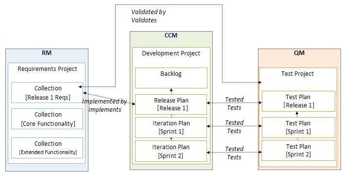

| Guideline: Traceability |
 |
|
| Related Elements |
|---|
The whole team is responsible for managing traceability. Team members "link while they think", an approach used to establish traceability links when team members create or update artifacts. In doing so, they don't have to be reminded to perform a separate task after the fact, thus guaranteeing it gets done and the traceability links are accurate. While using the ALM tools, team members can automate the creation of traceability links as much as possible. Most artifacts can be created in context of another artifact, which should automatically create the correct traceability links between artifacts. Please refer to Figure 1 for an illustration of types of links that can be created between the various artifacts in the context of ALM tools.  Figure 1 - Possible traceability links created between artifacts in the context of ALM tools The traceability links are explained as follows:
For more information on this topic, the "Link It forward" article on Jazz.net is a good reference: http://jazz.net/blog/index.php/2010/10/21/link-it-forward/. Also, the following video on Jazz.net illustrates how to explore the linking capabilities in the ALM tools: http://jazz.net/library/video/466. |
Licensed Materials - Property of IBM |